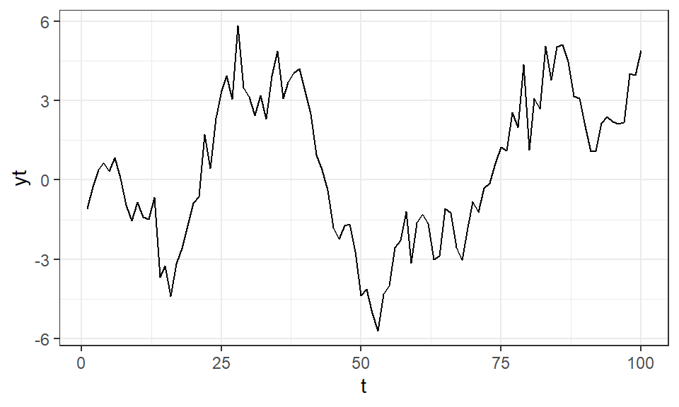
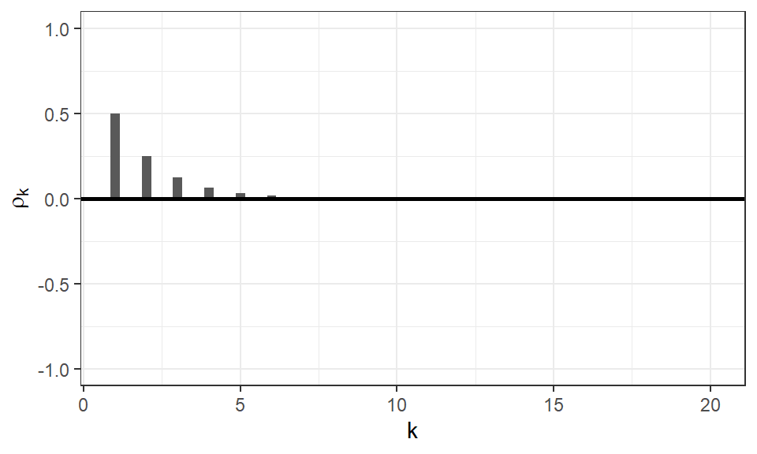
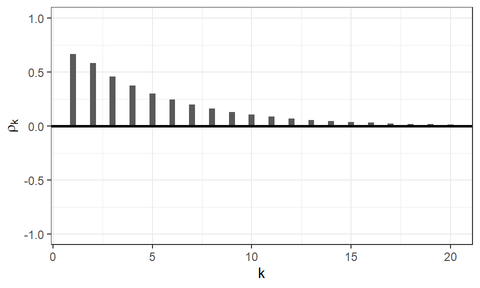
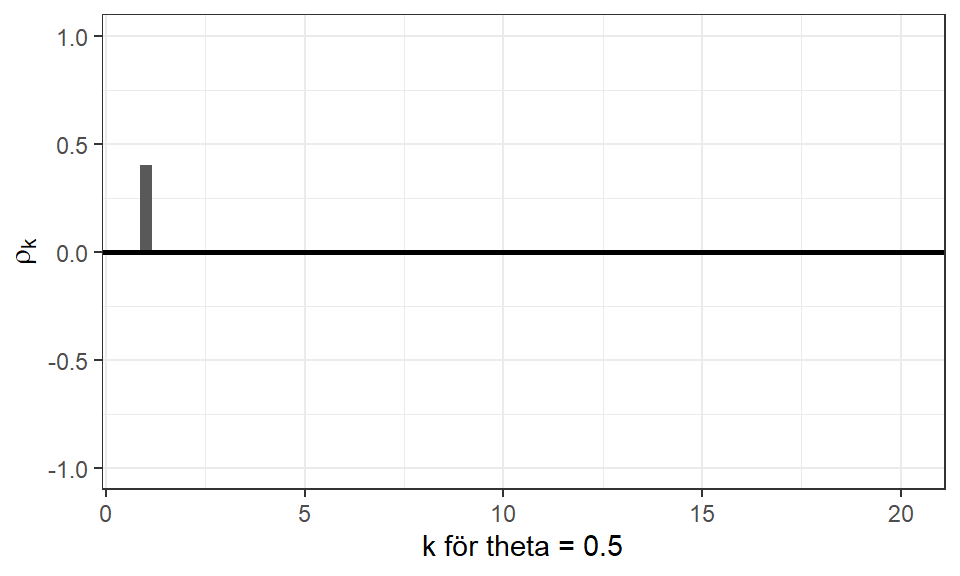
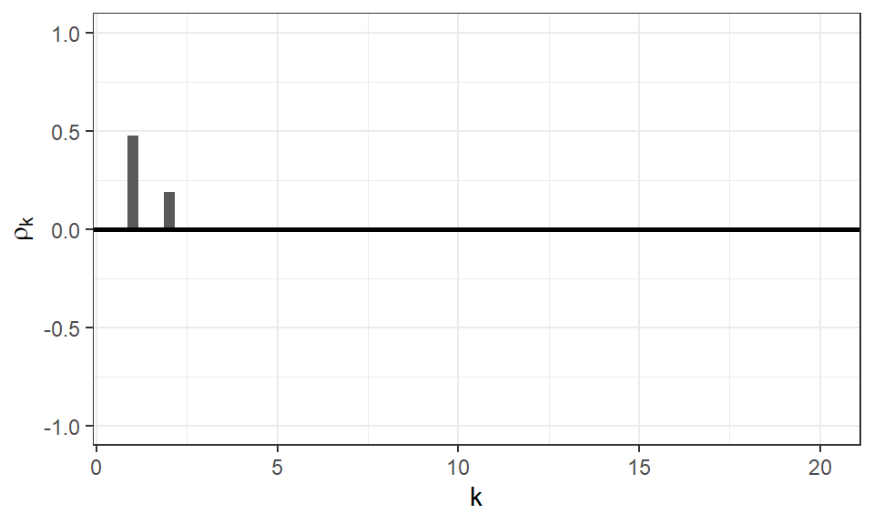

Hur kan en tidsserie utan en tydlig trend eller säsongsmönster modelleras? Vi kan på olika sätt ta tillvara på tidsberoendet i serien genom autoregressiva (AR) processer, som omfattar regression “på sig själv”, eller genom glidande medelvärde (MA) processer som innebär regression på tidigare feltermer.
I detta kapitel kommer dessa två typer av processer att presenteras separat för att i nästa kapitel visa hur de kan sammanfogas till en gemensam modell. Vi kommer titta på hur processerna ser ut i teorin och vilka egenskaper de uppvisar för att lättare kunna identifiera när de specifika processerna är lämpliga modellval för en observerad serie.
22.1 Autoregressiva processer (AR)
En autoregressiv process använder beroendet mellan olika tidpunkter som hjälpvariabler i en modell som väldigt mycket liknar en linjär regressionsmodell i tiden. Generellt kan vi beskriva en AR(p)-process som: \[
\begin{aligned}
Y_t = \phi_1 Y_{t-1} + \phi_2 Y_{t-2} + \dots + \phi_p Y_{t-p} + e_t
\end{aligned}
\tag{22.1}\] det vill säga att \(Y_t\) förklaras av en linjärkombination av \(p\) tidigare värden. Vardera \(\phi\) (grekiska bokstaven phi1) beskriver relationen mellan det specifika lagget (\(t-k\)) och den nuvarande tidpunkten (\(t\)).
Ett antagande som görs är att alla \(Y_t\) är oberoende från \(e_t\) där \(e_t\) betraktas som den information som de tidigare observerade tidpunkterna inte lyckas förklara. Detta fel antas \(N(0, \sigma^2_e)\), alltså ett vitt brus.
Notera
I Ekvation 22.1 antas att \(E[Y_t] = 0\) men vi kan enkelt utöka modellen till att ha \(\mu\) som medelvärde genom att formulera \(Y_t - \mu\) i vänsterledet (och för alla andra förekomster av \(Y_{t-k}\)). Genomgående i dessa kapitel kommer vi anta att väntevärdet är 0 men Cryer och Chan (2008) visar varianter när väntevärdet är nollskild.
22.1.1 AR(1)
Den enklaste formen av en autoregressiv modell är en AR(1): \[
\begin{aligned}
Y_t = \phi Y_{t-1} + e_t
\end{aligned}
\tag{22.2}\]
Denna modell antar att \(Y_t\) endast beror på den föregående tidpunkten och ett slumpfel. Detta slumpfel kan beskrivas som den nya informationen som nuvarande tidpunkt introducerar till serien.
Vi kan simulera hur en AR(1) ser ut för olika värden på \(\phi\) med hjälp av funktionen arima.sim(). Vi kan ändra värdet på \(\phi\) i följande kod för att se hur serien förändras, men vi måste tänka på vissa begränsningar som vi återkommer till nedanför.
# Egenskaper för simuleringenn <-100phi <-0.9# Visualisera serien i ett linjediagramtibble(t =seq_len(n),yt =arima.sim(n = n, model =list(order =c(1,0,0), ar = phi)) |>as.numeric()) |>ggplot() +aes(x = t, y = yt) +geom_line() +theme_bw()

Simulerad AR(1) serie från angivet phi
En av serierna vi tittade på i föregående kapitel, Random Walk i Ekvation 21.6, är ett specialfall av en AR(1) process när \(\phi = 1\). Vi bedömde dock att en Random Walk inte var en stationär serie och ett utav grundkraven för att använda AR (och MA) modeller är stationäritet. Så hur kan vi säkerställa att en AR-process uppfyller stationäritet? I just detta fall, hur behöver vi begränsa \(\phi\) för att en AR(1) ska anses vara en stationär serie?
Vi kan börja med att beräkna variansen av Ekvation 22.2:
Kom ihåg att \(\gamma_0 = cov(Y_t, Y_t) = Var(Y_t)\) gäller för alla \(Y_{t-k}\) där \(k \ge 0\).
Redan vid detta uttryck framkommer några begränsningar som måste göras, nämligen \[
\begin{aligned}
|\phi| < 1
\end{aligned}
\tag{22.3}\] , för att variansen ska vara definierbar och strikt positiv utifrån nämnaren. Vi kallar detta för seriens stationäritetsvillkor.
Autokovariansen för lagg \(k\) blir då:
\[
\begin{aligned}
\gamma_k = \phi \gamma_{k-1} + E\left[e_t Y_{t-k}\right]
\end{aligned}
\] som pga oberoendet mellan \(e_t\) och \(Y_{t-k}\) för k > 0 ger: \[
\begin{aligned}
\gamma_k = \phi \gamma_{k-1}
\end{aligned}
\tag{22.4}\] för alla \(k > 0\).
Vi kan utveckla denna ekvation för att hitta ett annat sätt att formulera autokovariansen. \[
\begin{aligned}
\gamma_1 &= \phi \gamma_0 &&= \phi \frac{\sigma^2_e}{1 - \phi^2}\\
\gamma_2 &= \phi \gamma_1 &&= \phi \phi \frac{\sigma^2_e}{1 - \phi^2}\\
&&&= \phi^2 \frac{\sigma^2_e}{1 - \phi^2} \\
\gamma_3 &= \phi \gamma_2 &&= \phi^3 \frac{\sigma^2_e}{1 - \phi^2}\\
&&\vdots\\
\gamma_k & &&= \phi^k \frac{\sigma^2_e}{1 - \phi^2}
\end{aligned}
\]
Med hjälp av denna formulering kan vi reducera autokorrelationen till:
\[
\begin{aligned}
\rho_k = \frac{\gamma_k}{\sqrt{\gamma_0 \cdot \gamma_0}} = \frac{\gamma_k}{\gamma_0} = \frac{\phi^k \frac{\sigma^2_e}{1 - \phi^2}}{\frac{\sigma^2_e}{1 - \phi^2}} = \phi^k
\end{aligned}
\] det vill säga en exponentiellt minskande korrelation då \(|\phi| < 1\).
Med hjälp av dessa härledningar kan vi interaktivt visualisera hur \(\rho_k\) ser ut för olika värden på \(\phi\). Denna visualisering av den sanna autokorrelationen kan ge oss en intuition när vi senare vill identifiera lämpliga modeller med hjälp av den observerade autokorrelationen (SAC).
# Ange ett värde på phi i processenphi <-0.5tibble(k =seq_len(20), rho = phi^k) |>ggplot() +aes(x = k, y = rho) +geom_bar(width =0.3, stat ="identity") +scale_y_continuous(limits =c(-1, 1)) +geom_hline(yintercept =0, linewidth =1) +labs(y =expression(rho[k])) +theme_bw()

Autokorrelationen för en AR(1) med olika phi
Testa att ändra phi till olika lämpliga värden, givet \(|\phi| < 1\), och se vad som händer med visualiseringen. Testa även negativa tal och se hur det förändrar \(\rho_k\).
Figuren visar ett snabbt avtagande mönster till skillnad från det långsamt avtagande, nästan cycliska mönster som Random Walk uppvisade. Detta visar att när vi begränsar \(\phi\) enligt dess stationäritetsvilkor blir serien stationär.
22.1.2 AR(2)
Om vi utökar modellen till att också ta hänsyn till ytterligare en tidigare tidpunkt fås: \[
\begin{aligned}
Y_t = \phi_1 Y_{t-1} + \phi_2 Y_{t-2} + e_t
\end{aligned}
\]
Vi kan gå igenom liknande härledningar för de olika beskrivande måtten för en AR(2)-process som vi gjorde för AR(1) men det blir snabbt mycket komplicerat. Istället väljer vi i detta läge att enbart visa stationäritetsvillkoren och vi kan läsa mer om denna härledning i Cryer och Chan (2008)2. Villkoren för stationäritet i en AR(2) kan sammanfattas med följande tre begränsningar.
Att beräkna autokorrelationen för olika värden på \(\phi\) blir också mer komplicerat eftersom vi numera har två variabler men vissa härledningar finns även för en AR(2) i Cryer och Chan (2008). Med följande kod kan vi justera värden på \(\phi_1\) och \(\phi_2\) för att beräkna \(\rho_k\) utifrån de härledda formlerna.
rhoAr2 <-function(phi1, phi2) {# Kontrollerar att stationäritetsvillkoren är uppfylldaassert_that(phi1 + phi2 <1, msg ="phi1 + phi2 är inte < 1")assert_that(phi2 - phi1 <1, msg ="phi2 - phi1 är inte < 1")assert_that(abs(phi2) <1, msg ="|phi2| är inte < 1") n <-20# Skapa en tom vektor rho <-numeric()# Beräkna rho med två specialfall för t = 1 och t = 2for (t inseq_len(n)) {if (t ==1) { rho[t] <- phi1 / (1- phi2) } elseif (t ==2) { rho[t] <- (phi2 * (1- phi2) + phi1^2) / (1- phi2) } else { rho[t] <- phi1 * rho[t-1] + phi2 * rho[t-2] } } graph <-tibble(k =seq_len(20), rho = rho ) |>ggplot() +aes(x = k, y = rho) +geom_bar(width =0.3, stat ="identity") +scale_y_continuous(limits =c(-1, 1)) +geom_hline(yintercept =0, linewidth =1) +labs(y =expression(rho[k])) +theme_bw()print(graph)return(rho)}rho <-rhoAr2(phi1 =0.5, phi2 =0.25)

Autokorrelationen för en AR(2) med olika värden på phi
Testa olika kombinationer av parametrarna och försök att identifiera några trender i modellernas autokorrelation. Notera att funktionen kommer generera ett felmeddelande om stationäritetsantaganden inte uppfylls och modellen inte är lämplig. Något vi kan ta med oss från dessa tester är att det är betydligt mer komplicerat att identifiera trender för autokorrelationen i en AR(2) än en AR(1). Detta blir än mer komplext när ordningen ökar vilket innebär att samma trender kan beskriva olika typer av modeller. Vi kommer återkomma till hur vi hanterar detta problem senare.
CautionÖvning 1
Vilka av följande påståenden om autoregressiva processer är korrekta?
Sant. Villkoret \(|\phi|<1\) krävs för att en AR(\(1\))-process ska vara stationär.
Sant. En AR(\(p\))-process använder \(p\) tidigare värden för att beskriva det nuvarande värdet.
Falskt. För en stationär AR(\(1\))-process gäller \(\rho_k=\phi^k\), vilket innebär att autokorrelationen vanligtvis avtar gradvis.
Falskt. Feltermen \(e_t\) beskriver den nya information som tidigare observationer inte lyckas förklara.
CautionÖvning 2
Betrakta en AR(\(2\))-process \(Y_t = \phi_1Y_{t-1} + \phi_2Y_{t-2} + e_t\). För att processen ska vara stationär måste följande tre villkor vara uppfyllda: \(\phi_1 + \phi_2 < 1\), \(\phi_2 - \phi_1 < 1\) och \(|\phi_2| < 1\). Vilka av följande parameterpar uppfyller samtliga stationäritetsvillkor?
Sant. Här gäller \(\phi_1 + \phi_2 = -0.9 < 1\), \(\phi_2 - \phi_1 = 0.5 < 1\) och \(|\phi_2| = 0.2 < 1\). Samtliga stationäritetsvillkor är därför uppfyllda.
Sant. Här gäller \(\phi_1 + \phi_2 = 0.9 < 1\), \(\phi_2 - \phi_1 = -0.3 < 1\) och \(|\phi_2| = 0.3 < 1\). Samtliga stationäritetsvillkor är därför uppfyllda.
Falskt. Det första villkoret är inte uppfyllt eftersom \(\phi_1 + \phi_2 = 1.05 > 1\).
Falskt. Det andra villkoret är inte uppfyllt eftersom \(\phi_2 - \phi_1 = 0.85 - (-0.2) = 1.05 > 1\).
22.2 Glidande medelvärdesprocesser
Istället för att använda det observerade värdet från en föregående tidpunkt kan vi skapa en modell som baseras på den slumpmässiga felet från den nuvarande och \(q\) tidigare tidpunkter. Detta liknar definitionen av Avsnitt 21.3.3 men vi tittar nu istället på en generell process, inte en specifik serie.
Generellt kan vi beskriva en MA(q) process som: \[
\begin{aligned}
Y_t = e_t + \theta_1 e_{t-1} + \theta_2 e_{t-2} + \dots + \theta_q e_{t-q}
\end{aligned}
\tag{22.6}\] där de olika \(\theta\) (grekiska theta3) beskriver hur stor effekt respektive tidpunkts felterm har på det nuvarande.
En MA-process har inte några specifika stationäritetsvillkor för \(\theta\), däremot behöver vi titta närmare på invertibilitet som ett krav på modellen, vilket vi gör i Avsnitt 22.2.3.
Viktigt
Notera att vi ändrar symbolen framför \(\theta\) från \(-\) till \(+\) jämfört med Cryer och Chan (2008) på grund av att de funktioner vi använder i R använder denna formulering med positiva parametrar. Se dokumentationen för funktionen stats::arima() som TSA-paketet använder som grund.
22.2.1 MA(1)
Med endast en MA-term blir modellen: \[
\begin{aligned}
Y_t = e_t + \theta e_{t-1}
\end{aligned}
\tag{22.7}\] med följande egenskaper:
Vi kan också, likt de beskrivande måtten för Avsnitt 21.3.3, enkelt beräkna fram autokovariansen genom att titta på hur många gemensamma termer som olika lagg har då \(e_t\) och \(e_s\) antas oberoende när \(t \ne s\). För \(k = 1\):
# Ange ett värde på theta i processentheta <-0.5tibble(k =seq_len(20), rho =if_else(k ==1, theta / (1+ theta^2), 0)) |>ggplot() +aes(x = k, y = rho) +geom_bar(width =0.3, stat ="identity") +scale_y_continuous(limits =c(-1, 1)) +geom_hline(yintercept =0, linewidth =1) +labs(y =expression(rho[k]), x =sprintf("k för %s = %s", expression(theta), theta)) +theme_bw()

Autokorrelationen för en MA(1) med olika theta
Testa att ändra theta till olika värden och se vad som händer med visualiseringen. Specifikt testa \(\theta = 0.5\) och \(\theta = \frac{1}{0.5} = 2\) och se vad som händer med visualiseringen.
22.2.2 MA(2)
En MA(2) process definieras som: \[
\begin{aligned}
Y_t = e_t + \theta_1 e_{t-1} + \theta_2 e_{t-2}
\end{aligned}
\]
Likt en AR(2) process går det att visa hur autovariansen och autokorrelationen beräknas men det blir snabbt komplext och vi väljer här att visa enbart de resulterande autokorrelationerna:
Vad detta betyder är att när \(q = 2\) finner vi två nollskilda lagg och resterande är 0. Detta beteende går att utöka till den generella MA(q) processen där vi kan se nollskilda lagg när \(k \le q\) och 0 för alla \(k > q\).
rhoMa2 <-function(theta1, theta2) {# Kontrollerar att invertibilitet är uppfylldassert_that(theta1 + theta2 <1, msg ="theta1 + theta2 är inte < 1")assert_that(theta2 - theta1 <1, msg ="theta2 - theta1 är inte < 1")assert_that(abs(theta2) <1, msg ="|theta2| är inte < 1") n <-20# Skapa en tom vektor rho <-numeric()# Beräkna rho med två specialfall för t = 1 och t = 2for (t inseq_len(n)) {if (t ==1) { rho[t] <- (theta1 + theta1*theta2) / (1+ theta1^2+ theta2^2) } elseif (t ==2) { rho[t] <- theta2 / (1+ theta1^2+ theta2^2) } else { rho[t] <-0 } } graph <-tibble(k =seq_len(20), rho = rho ) |>ggplot() +aes(x = k, y = rho) +geom_bar(width =0.3, stat ="identity") +scale_y_continuous(limits =c(-1, 1)) +geom_hline(yintercept =0, linewidth =1) +labs(y =expression(rho[k])) +theme_bw()print(graph)return(rho)}rho <-rhoMa2(theta1 =0.5, theta2 =0.25)

Autokorrelationen för en MA(2) med olika theta
Testa olika värden på theta1 och theta2. Oavsett vad värdena är kommer vi se två staplar i seriens första två lagg och resterande lagg har 0 i autokorrelation.
22.2.3 Invertibilitet
När vi beräknar autokorrelationen för en MA-process ser vi att både \(\theta\) och \(1 / \theta\) ger samma värde, vilket blir ett problem när vi ska anpassa modellen.
Notera
Vi kan definiera en generell linjär process som en oändlig serie av nuvarande och tidigare vitt brus:
\[
\begin{aligned}
Y_t = e_t + \psi_1 e_{t-1} + \psi_2 e_{t-2} + \cdots
\end{aligned}
\tag{22.10}\] där \(\Sum{\infty} \psi^2_i < \infty\) för att vara en oändlig serie.
Vi kan omformulera en AR(1) (Ekvation 22.2) till denna generella linjära process enligt: \[
\begin{aligned}
Y_t = \phi Y_{t-1} + e_t &= \phi \left(\phi Y_{t-2} + e_{t-1}\right) + e_t \\
&= \phi \left(\phi \left(\phi Y_{t-3} + e_{t-2} \right) + e_{t-1}\right) + e_t\\
&\qquad \qquad \vdots \\
&= e_t + \phi^1 e_{t-1} + \phi^2 e_{t-2} + \phi^3 e_{t-3} + \dots
\end{aligned}
\] det vill säga \(\psi_j = \phi^j\) när \(|\phi| < 1\).
Från räkneregler för geometriska summor fås: \[
\begin{aligned}
\gamma_k &= \frac{\phi^k \sigma^2_e}{1 - \phi^2} \\
\\
\rho_k &= \phi^k
\end{aligned}
\] vilket är samma egenskaper som vi sett tidigare trots att vi nu formulerat modellen som en glidande medelvärdeprocess.
Problemet med att definiera modellen i en MA(1) kan lösas genom en transformation från en MA modell till en AR modell, alltså det motsatta som vi tidigare visat.
Om \(|\theta| < 1\) kan vi fortsätta denna ekvation oändligt likt Ekvation 22.10 till \(e_t = Y_t - \theta Y_{t-1} - \theta^2 Y_{t-2} \dots\). Detta kallas för att serien inverteras vilket endast kan ske om \(|\theta| < 1\). För en generell MA(q) liknande krav på \(\theta\) som för \(\phi\) i en generell AR(p).
För alla modeller som innehåller en MA komponent krävs därför både stationäritet och invertibilitet.
CautionÖvning 3
Autokorrelation och invertibilitet är viktiga egenskaper hos glidande medelvärdesprocesser. Vilka av följande påståenden om MA-processer är korrekta?
Falskt. En MA-process är stationär oavsett värdena på parametrarna. Däremot används villkor på parametrarna för att säkerställa invertibilitet.
Sant. För en MA(\(q\))-process kan autokorrelationen vara nollskild till och med lagg \(q\), men är \(0\) för alla större lagg.
Falskt. För en MA(\(2\))-process är autokorrelationen \(0\) för alla lagg \(k>2\).
Sant. För en MA(\(1\))-process kan \(\theta\) och \(1/\theta\) ge samma autokorrelation, vilket gör att ett invertibilitetsvillkor behövs för att modellen ska kunna identifieras entydigt.
22.3 Partiell autokorrelation
Vi har tidigare i detta kapitel visat hur autokorrelationen beter sig för olika modeller, men i praktiken räcker det inte att undersöka den skattade autokorrelationen (SAC) för att identifiera en lämplig modell. Vi såg till exempel hur \(\rho_k\) för AR(1) och AR(2) uppvisade väldigt liknande långsamt avtagande mönster för olika värden på \(\phi\) och modellens ordning medan MA(1) och MA(2) uppvisade lika många nollskilda autokorrelationer som ordningen av processen.
Vi behöver därför introducera ytterligare ett mått som kan hjälpa att välja en lämplig ordning på en AR-process, på samma sätt som autokorrelationen tydligt indikerar på en ordning av en MA-process.
Vi kan definiera den partiella autokorrelationen (eng. partial autocorrelation, PAC) som korrelationen mellan \(Y_t\) och \(Y_{t-k}\) när alla observationer emellan justerats bort. Vi definierar den enligt:
\[
\begin{aligned}
\phi_{kk} = cor(Y_t , Y_{t-k} | Y_{t-1}, Y_{t-2}, \dots, Y_{t-k+1})
\end{aligned}
\] givet att \(Y_t\) kan anses normalfördelad.
Detta är egentligen första gången ett sådant krav om normalfördelad \(Y_t\) explicit uppkommer när vi har att göra med tidsserier så ett alternativt sätt att formulera PAC utan detta krav är: \[
\begin{aligned}
\phi_{kk} = cor(&Y_t - \beta_1 Y_{t-1} - \beta_2 Y_{t-2} - \dots - \beta_{k-1} Y_{t-k+1}, \\
&Y_{t-k} - \beta_1 Y_{t-k+1} - \beta_2 Y_{t-k+2} - \dots - \beta_{k-1} Y_{t-1})
\end{aligned}
\tag{22.11}\] där \(\beta_1\) till \(\beta_{k-1}\) är parametrar i en linjär prediktor som anpassats för att minimera MSPR till \(Y_t\) och \(Y_{t-k}\) respektive. PAC kan med denna formulering beskrivas som korrelationen mellan prediktionsfelet från de två tidpunkterna.
För enkelhetens skull definierar vi \(\phi_{11} = 1\) och kan visa att \(\phi_{22}\) är: \[
\begin{aligned}
\phi_{22} = \frac{\rho_2 - \rho_1^2}{1 - \rho_1^2}
\end{aligned}
\tag{22.12}\]
När vi använder Ekvation 22.12 för en AR(1) modell fås: \[
\begin{aligned}
\phi_{22} = \frac{\phi^2 - \phi^2}{1 - \phi^2} = 0
\end{aligned}
\] eftersom \(\rho_k = \phi^k\).
För en AR(2) fås: \[
\begin{aligned}
\phi_{22} &= \frac{ \left(\frac{\phi_1^2}{1 - \phi_2} + \phi_2\right) - \left(\frac{\phi_1}{1 - \phi_2}\right)^2}{1 - \left(\frac{\phi_1}{1 - \phi_2}\right)^2}\\
&= \frac{\frac{\phi_1^2}{1 - \phi_2} + \phi_2 - \frac{\phi_1^2}{(1 - \phi_2)^2}}{1 - \frac{\phi_1^2}{(1 - \phi_2)^2}} \\
&= \frac{\frac{\phi_1^2 (1-\phi_2)}{(1-\phi_2)^2} - \frac{\phi_1^2}{(1 - \phi_2)^2} + \phi_2}{1 - \frac{\phi_1^2}{(1 - \phi_2)^2}}\\
&= \frac{\frac{\phi_1^2}{(1-\phi_2)^2}(1 - \phi_2 - 1) + \phi_2}{1 - \frac{\phi_1^2}{(1 - \phi_2)^2}}\\
&= \frac{\frac{\phi_1^2}{(1-\phi_2)^2}(- \phi_2) + \phi_2}{1 - \frac{\phi_1^2}{(1 - \phi_2)^2}}\\
&= \frac{\phi_2 \left( 1 - \frac{\phi_1^2}{(1-\phi_2)^2}\right)}{1 - \frac{\phi_1^2}{(1 - \phi_2)^2}}\\
&= \phi_2
\end{aligned}
\] det vill säga ytterligare ett lagg där den partiella autokorrelationen är nollskild.
En generell regel för AR(p) är att för större lagg gäller \(\phi_{kk} = 0\) när \(k > p\). Detta innebär att vi får samma beteende i den partiella autokorrelationen för en AR-process som vi har i autokorrelationen för en MA-process; antalet nollskilda lagg motsvarar ordningen för processen.
Den partiella autokorrelationen för en MA(1), och generellt för en MA(q), avtar långsamt med större \(k\) vilket är samma fenomen som en AR(p)-process uppvisar för autokorrelationen. Vi har alltså två spegelvända beteenden för AR och MA för autokorrelationen och den partiella autokorrelationen.
Vi kan sammanfatta dessa i följande tabell:
Tabell 22.1: Visuella beteenden hos autokorrelationer
AR(p)
MA(q)
Autokorrelation
Långsamt avtagande
0 efter lagg q
Partiell Autokorrelation
0 efter lagg p
Långsamt avtagande
För enklare tidsserier kan denna tabell användas för att med hjälp av SAC och SPAC (eng. Sample Partial Autocorrelation) identifiera vilken typ av modell som är mest lämplig att använda. För mer komplicerade tidsserier kommer vi behöva ytterligare ett mått som introduceras i Avsnitt 23.2.
CautionÖvning 4
För en stationär tidsserie är autokorrelationerna vid lagg \(1\) och \(2\) lika med \(\rho_1 = 0.5\) respektive \(\rho_2 = 0.1\). Den partiella autokorrelationen vid lagg \(2\) kan beräknas som \(\phi_{22} = \frac{\rho_2 - \rho_1^2}{1 - \rho_1^2}\). Vilket av följande alternativ ger korrekt värde och tolkning av \(\phi_{22}\)?
Falskt. Sambandet försvinner endast om den beräknade partiella autokorrelationen är lika med \(0\). Det sker inte automatiskt när \(Y_{t-1}\) justeras bort.
Falskt. Autokorrelationen \(\rho_2\) innehåller både direkta samband och indirekta samband som går via mellanliggande observationer. Den partiella autokorrelationen justerar bort effekten av dessa observationer.
Falskt. När effekten av mellanliggande observationer justeras bort kan både sambandets storlek och dess tecken förändras.
Sant. Beräkningen ger \(\phi_{22} = \frac{0.1 - 0.5^2}{1 - 0.5^2} = \frac{-0.15}{0.75} = -0.20\). Det negativa värdet innebär att det återstående linjära sambandet mellan \(Y_t\) och \(Y_{t-2}\) är negativt efter att effekten av \(Y_{t-1}\) har justerats bort.
22.4 Övningsuppgifter
CautionÖvning 5
Beräkna \(\rho_1\) för en MA(1) process där \(\theta = 0.2\).
\(\rho_1 = \frac{\theta}{1 + \theta^2}\)
CautionÖvning 6
Beräkna \(\rho_3\) för en AR(1) process där \(\phi = 0.8\).
\(\rho_k = \phi^k\)
CautionÖvning 7
Vilken modell anses passa in på följande SAC och SPAC diagram?
SAC och SPAC för en okänd modell
Falskt. SPAC visar på 2 spikar, så en AR(1) är för simpel.
Falskt. Trots att SPAC avtar snabbt och SAC kan tolkas som 3 spikar, är den enklaste modellen den med färre parametrar, AR(2).
Falskt. SAC avtar relativt snabbt så serien kan anses stationär.
Sant. SAC avtar snabbt medan SPAC visar på två spikar.
![]()